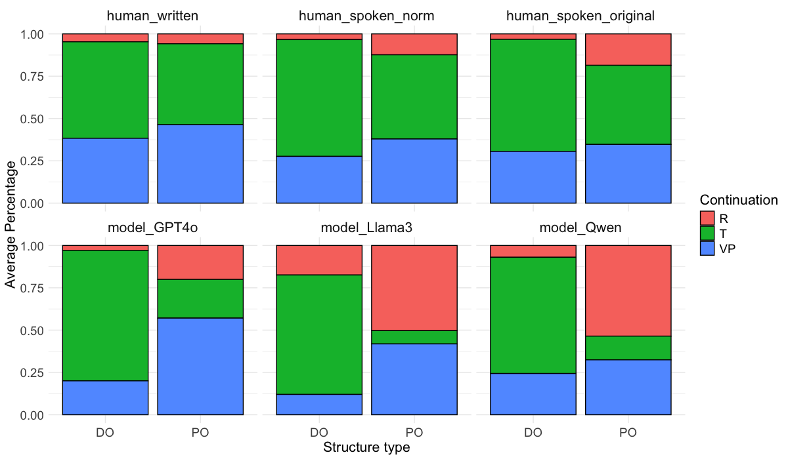

About Me

Shuqi (Eliza) Wang 王書琪
I completed my PhD in September 2026 and am on the job market for postdoctoral and research assistant professor positions (2027 start) in computational psycholinguistics, human–LLM comparison and LLM evaluation.I received my PhD in Linguistics from The Chinese University of Hong Kong in 2026 (thesis Predictive Language Processing in Humans and in Large Language Models, passed in September 2026; degree to be conferred in March 2027), working in the Language Processing Lab under Prof. Zhenguang G. Cai. My doctoral work was supported by the Hong Kong PhD Fellowship and the CUHK Vice-Chancellor’s HKPFS Scholarship.
My research asks how humans and large language models predict upcoming language, and what controlled comparisons between them can and cannot explain. I pair eye-tracking (the visual world paradigm), spoken-language and sentence-completion experiments in Mandarin with matched evaluations of text, vision–language and speech–language models (GPT-4o, Llama 3.2, Qwen2.5, LLaVA-1.5, Qwen2.5-Omni), including layer-wise and cross-modal attention analyses. The recurring finding is that models predict what humans predict, but by different routes: they weight sentence structure several times more strongly, deploy some cues less reliably, and show later cue effects. My thesis develops a framework for reading such comparisons — the LLM as measurement tool, candidate cognitive model or contrastive model — together with a checklist for reporting what a comparison licenses.
Current directions: human-grounded benchmarks for Chinese LLMs and speech–language models (including a Mandarin phonological minimal-pair benchmark); interpretability beyond attention (attention versus gradient-based attribution, and the faithfulness of model explanations); and what speech adds to language-model–brain alignment, using text-only and audio-conditioned readouts from a single speech–text LLM as encoding models of naturalistic Mandarin MEG. I am also interested in prediction under cognitive load during consecutive interpreting.
Before my PhD, I studied second-language processing and bilingualism at Peking University (M.A.) and Nanjing University (B.A.), both in teaching Chinese as a second language. I also co-founded the Computational Neurolinguistics Forum (计算神经语言学; about 7,900 followers, 14 online talks in 2025–26), an academic platform bridging psycholinguistics, neuroscience and computational modelling for the Chinese-speaking research community.
Email: shuqiwang@link.cuhk.edu.hk
Google Scholar · ORCID · GitHub
Curated Research

Similar Predictions, Different Processes: Comparing Human and Multimodal LLM Prediction
Using the visual world paradigm with spoken Mandarin and visual displays, we show that humans and Qwen2.5-Omni produce similar prediction outputs but differ in processing dynamics — a structure effect about three times the human effect, a later structural sensitivity and anomalous cue integration in the model reveal algorithmic-level divergence beneath computational-level convergence.
CoNLL 2026 @ ACL → Code →
What to Predict? Sentence Structure Influences Contrast Predictions in Humans and LLMs
Mandarin dative structures (DO/PO) modulate contrastive focus predictions differently in humans and LLMs. Both show the same direction of structural effects, but models amplify them 3× relative to humans — and correlate more with spoken than written human data. 🏆 Best Paper Nomination.
CMCL 2025 @ NAACL →
A Multimodal LLM "Foresees" Objects Based on Verb Information but Not Gender
LLaVA-1.5 shows verb-based anticipatory attention in visual scenes — paralleling human VWP patterns — but fails at gender-based prediction. Layer-wise analysis reveals middle transformer layers are most responsible for verb-driven predictive behavior.
CoNLL 2024 @ EMNLP →